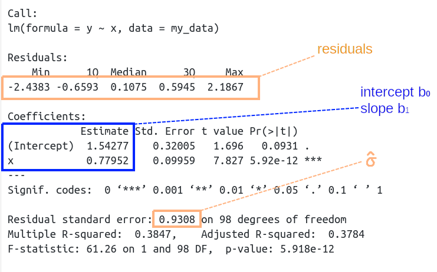
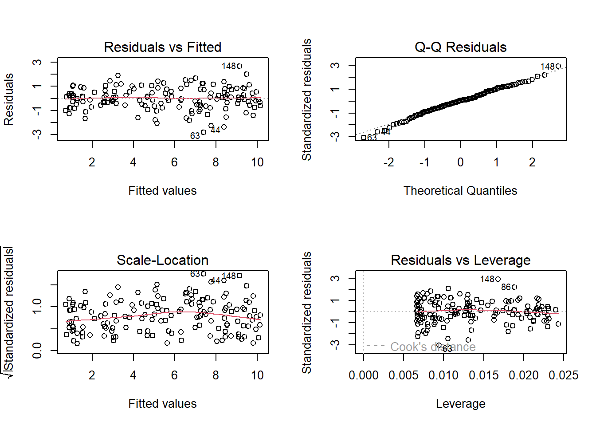

5B: Simple Linear Regression
This reading:
- Modelling an outcome variable as a linear function of an explanatory variable (correlation as an intercept and a slope).
- Testing the parameters that define our model.
- Simple statistical tests as linear models.
The Linear Model
In its simplest form, linear regression is a way to make a model of the relationship between two variables. When both variables are continuous, it is nice and intuitive to envisage this as the ‘line of best fit’ on a scatterplot. For instance, in Figure 1 we see two variables y and x, and our linear regression model is the blue line.
We’re going to use the data in this plot for the remainder of the reading. If you wish to play around with it yourself, it is available at https://uoepsy.github.io/data/usmr_slr.csv, and contains a sample of 100 observations on variables x and y.
library(tidyverse)
my_data <- read_csv("https://uoepsy.github.io/data/usmr_slr.csv")
head(my_data)# A tibble: 6 × 2
x y
<dbl> <dbl>
1 3.19 4.42
2 2.57 4.48
3 3.91 2.72
4 4.79 5.39
5 4.00 3.85
6 4.11 4.42Figure 1, above, highlights a linear relationship, where the data points are scattered around an underlying linear pattern with a roughly-constant spread as we move along x.
In 5A: Covariance & Correlation we have already talked about one way to describe this relationship, by calculating either the covariance or the correlation between x and y. However, as we will see in the coming weeks, the linear model provides us with the scope to extend our analysis to many more situations - it is the building block of many more complex analytical methods.
The simple linear regression model takes the form:
\[ \begin{align} & y = b_0 + b_1 \cdot x + \varepsilon \quad \\ \end{align} \]
You will see a variety of different ways of specifying the linear model form in different resources, some use \(\beta\), some use \(b\). Sometimes you will see \(\alpha\) instead of \(b_0\).
We typically refer to the outcome (‘dependent’) variable with the letter \(y\) and to our predictor (‘explanatory’/‘independent’) variables with the letter \(x\). When we construct a linear model we are trying to re-express our outcome variable \(y\) with some linear transformation of our predictor variable \(x\).
You can think of this in broader terms as: \[ \begin{align} & \color{red}{Outcome}\color{} = \color{blue}{Model}\color{black}{} + Error\\ \end{align} \]
The Model
When we fit a simple regression model, the bit we refer to as the ‘model’ is the line that is defined by two numbers, an ‘intercept’ and a ‘slope’ (see Figure 2):
- the intercept, denoted \(b_0\), is the point at which the line hits the y-axis (i.e. where \(x=0\))
- the slope, denoted \(b_1\), is the angle of the line. It is the amount which the line increases for every 1 increase in \(x\).
This line implies some predicted values for our observed \(x\) values. For instance, we can see that when \(x=3\), the model (the blue line) will predict that \(y\) is approximately 4. If we take each of our datapoints, and project them up/down to the line, then we get our fitted values (Figure 3). We often denote these as \(\hat y\) (or “y hat”), with the hat indicating that they are the model-estimated values of \(y\).
\[ \begin{align} \color{red}{Outcome}\color{black} \qquad=\qquad & \color{blue}{Model}\color{black}{} & +\qquad Error\\ \color{red}{y}\color{black} \qquad = \qquad & \color{blue}{\hat y}\color{black} & +\qquad \varepsilon \quad \\ \color{red}{y}\color{black} \qquad = \qquad & \color{blue}{b_0 + b_1 \cdot x}\color{black} & +\qquad \varepsilon \quad \\ \end{align} \]
optional: Regression Slope vs Covariance
With simple linear regression, the fitted line we are describing is actually a scaled version of our covariance.
Remember that covariance is the average of the products of \((x_{i}-\bar{x})(y_{i}-\bar{y})\), which is a bit like the average area of the rectangles in Figure 4. If we think about what the average width of these rectangles is, it is the average of \((x_{i}-\bar{x})\), which is actually just the variance of \(x\)!

We can divide the area of the average rectangle (\(cov(x, y)\)) by its width (\(var(x)\)), thereby scaling it so that the width is 1. What we’re getting from our coefficient is the area of this new rectangle which has width = 1. Because width = 1, the area is also the height (\(\text{area} = \text{width} \times \text{height} = 1 \times \text{height}\)). So what we get is the amount that \(y\) increases (the height) as \(x\) increases by 1 (the width).
We can see this working:
cov(my_data$x, my_data$y)[1] 0.6877738var(my_data$x)[1] 0.8823097This calculation gives us the same linear regression slope of 0.78 that we see when we fit the model using lm().
cov(my_data$x, my_data$y)/var(my_data$x)[1] 0.7795152The Error
Our model is not perfect. It is a model - i.e. it is a simplification of the world, and so is inherently going to be inaccurate for individuals. This inaccuracy can be seen in our plots so far - some points are higher than the model predicts, some lower. These deviations from the model (shown by the black dotted lines in Figure 5) from the model are the random error component \(\hat \varepsilon\), or “residuals”.
\[ \begin{align} Error &= \color{red}{Outcome}\color{black}-\color{blue}{Model} \\ \hat{\varepsilon} &= \color{red}{y}\color{black}- \color{blue}{\hat{y}} \end{align} \]
In full, we should really write our linear regression model out as:
\[ \begin{align} & y = b_0 + b_1 \cdot x + \varepsilon \quad \\ & \text{where} \\ & \varepsilon \sim N(0, \sigma) \text{ independently} \end{align} \]
The new bit here: “\(\varepsilon \sim N(0, \sigma) \text{ independently}\)” means that the errors around the line have mean zero and constant spread as x varies (we’ll read more about what this means later on when we discuss the assumptions underlying regression). You can think of \(\sim N(0, \sigma)\) as meaning “normally distributed with a mean of zero and a standard deviation of \(\sigma\)”.
The standard deviation of the errors, denoted by \(\sigma\), is an important quantity that our model estimates. It measures how much individual data points tend to deviate above and below the regression line. A small \(\sigma\) indicates that the points hug the line closely and we should expect fairly accurate predictions, while a large \(\sigma\) suggests that, even if we estimate the line perfectly, we can expect individual values to deviate from it by substantial amounts.
\(\sigma\) is estimated by essentially averaging squared residuals (giving the variance) and taking the square-root:
\[
\begin{align}
& \hat \sigma = \sqrt{\frac{SS_{Residual}}{n - 2}} \\
\qquad \\
& \text{where} \\
& SS_{Residual} = \textrm{Sum of Squared Residuals} = \sum_{i=1}^n{(\varepsilon_i)^2}
\end{align}
\]
Fitting Linear Models in R
lm()
In R it is very easy to fit linear models, we just need to use the lm() function.
The syntax of the lm() function is:
model_name <- lm(outcome ~ 1 + predictor, data = dataframe)We don’t have to include the 1 + when we specify the model, as this will be included by default, so we can also simply write:
model_name <- lm(outcome ~ predictor, data = dataframe)
What is the ~1 + doing?
The fitted model can be written as \[
\hat y = \hat b_0 + \hat b_1 \cdot x
\] The predicted values for the outcome are equal to our intercept, \(\hat b_0\), plus our slope \(\hat b_1\) multiplied by the value on our explanatory variable \(x\).
The intercept is a constant. That is, we could write it as multiplied by 1: \[
\hat y = \color{blue}{\hat b_0}\color{black}{}\cdot\color{orange}{1}\color{blue}{ + \hat b_1 }\color{black}{}\cdot\color{orange}{x}\color{black}{}
\]
When we specify the linear model in R, we include after the tilde sign ~ all the things which appear to the right of each of the \(\hat b\)s (the bits in green in the equartion above). That’s why the 1 is included. It is just saying “we want the intercept, \(b_0\), to be estimated”.
Model Summary
We can then view lots of information by giving our model to the summary() function:
my_model <- lm(y ~ x, data = my_data)
summary(my_model)
The intercept \(b_0\) is the point at which the line hits the y-axis (i.e. where \(x=0\)), and the slope \(b_1\) is the amount which the line increases for every 1 increase in \(x\). We can see the estimated values of these in Figure 6, and these provide us with our fitted lin:
\[
\begin{align}
y =& 1.54 + 0.78 \cdot x + \varepsilon \\
\end{align}
\] We also see that the standard deviation of the residuals, \(\sigma\), is 0.93, which means we consider the actual observed values of Y to vary randomly around this line with a standard deviation of 0.93.
Model Predictions
We can get out the model predicted values for \(y\), the “y hats” (\(\hat y\)), using functions such as:
predict(my_model)fitted(my_model)fitted.values(my_model)my_model$fitted.values
A nice package which will come in handy is the broom package. It allows us to use the function augment(), which gives us out lots of information, such as the model predicted values, the residuals, and many more:
library(broom)
augment(my_model)# A tibble: 100 × 8
y x .fitted .resid .hat .sigma .cooksd .std.resid
<dbl> <dbl> <dbl> <dbl> <dbl> <dbl> <dbl> <dbl>
1 4.42 3.19 4.03 0.388 0.0102 0.935 0.000903 0.420
2 4.48 2.57 3.54 0.941 0.0130 0.931 0.00681 1.02
3 2.72 3.91 4.59 -1.87 0.0180 0.916 0.0378 -2.03
4 5.39 4.79 5.28 0.107 0.0438 0.935 0.000319 0.118
5 3.85 4.00 4.66 -0.809 0.0197 0.932 0.00776 -0.878
6 4.42 4.11 4.74 -0.327 0.0222 0.935 0.00143 -0.355
7 4.30 2.72 3.66 0.638 0.0114 0.933 0.00274 0.689
8 5.94 4.02 4.68 1.26 0.0202 0.927 0.0193 1.37
9 1.70 3.05 3.92 -2.22 0.0100 0.908 0.0291 -2.40
10 4.79 4.58 5.11 -0.318 0.0358 0.935 0.00224 -0.348
# ℹ 90 more rowsWe can also compute model-predicted values for other (unobserved) data. For instance, what about for an observation where \(x=10\), or \(20\)?
# make a dataframe with values for the predictor:
some_newdata <- data.frame(x=c(10, 20))
# model predicted values of y, for the values of x inside the 'some_newdata' object:
predict(my_model, newdata = some_newdata) 1 2
9.33792 17.13307 Given that our fitted model takes the form below, we can work this out ourselves as well:
\[ \begin{align} y &= 1.54 + 0.78\cdot x \\ y &= 1.54 + 0.78\cdot 10 \\ y &= 1.54 + 7.80\\ y &= 9.34 \\ \end{align} \]
Tests of regression coefficients
Now that we have fitted a linear model, and we know how we interpret our coefficient estimates, we would like to be able to make a statement on whether these relationships are likely to hold in the population.
Our coefficients accurately describe the relationship between \(y\) (outcome) and \(x\) (predictor) in our sample, but we are yet to perform a statistical test. A test will enable us to discuss how likely it is that we would see this relationship in our sample, if the relationship doesn’t hold for the population.

Much like our discussion of sample means and intervals in 2B: Sampling & Curves, we have our coefficients:
coef(my_model)(Intercept) x
1.5427681 0.7795152 and to quantify the amount of uncertainty in each estimated coefficient that is due to sampling variability, we use the standard error (SE)1 of the coefficient.
The standard errors are found in the column “Std. Error” of the summary() of a model:
summary(my_model)$coefficients Estimate Std. Error t value Pr(>|t|)
(Intercept) 1.5427681 0.32004944 4.820406 5.239619e-06
x 0.7795152 0.09959062 7.827194 5.917849e-12In this example the slope, 0.78, has a standard error of 0.10. One way to envision this is as a distribution. Our best guess (mean) for the slope parameter is 0.78. The standard deviation of this distribution is 0.10, which indicates the precision (uncertainty) of our estimate.
We can perform a test against the null hypothesis that the estimate is zero. The reference distribution in this case is a t-distribution with \(n-2\) degrees of freedom2, where \(n\) is the sample size, and our test statistic is:
\[ t = \frac{\hat b_1 - 0}{SE(\hat b_1)} \]
This allows us to test the hypothesis that the population slope is zero — that is, that there is no linear association between income and education level in the population.
We don’t actually have to do anything for this, it’s all provided for us in the summary() of the model! The information is contained in the row corresponding to the variable “education” in the output of summary(), which reports the t-statistic under t value and the p-value under Pr(>|t|):
summary(my_model)$coefficients Estimate Std. Error t value Pr(>|t|)
(Intercept) 1.5427681 0.32004944 4.820406 5.239619e-06
x 0.7795152 0.09959062 7.827194 5.917849e-12A significant association was found between x and y (\(b = 0.78\), \(SE = 0.10\), \(t(98)=7.83\), \(p<.001\)).
Recall that the p-value 5.92-e12 in the Pr(>|t|) column simply means \(5.92 \times 10^{-12}\). This is a very small value, hence we will report it as <.001 following the APA guidelines.

Binary Predictors
Let’s suppose that instead of having measured \(x\) so accurately, we simply had information on whether \(x>3\) or not. Our predictor variable would be binary categorical (think back to our discussion of types of data in 2A: Measurement) - it would have 2 levels:
my_data <-
my_data |>
mutate(
x_cat = ifelse(x < 3, "level1","level2")
)We may then plot our relationship as a boxplot. If you want to see the individual points, you could always “jitter” them (right-hand plot below)
ggplot(my_data, aes(x = x_cat, y = y)) +
geom_boxplot() +
ggplot(my_data, aes(x = x_cat, y = y)) +
geom_jitter(height=0, width=.05)We can include categorical predictors such as this in a linear regression, but the interpretation of the coefficients is very specific.
Up to now we have talked about coefficients being interpreted as “the change in \(y\) associated with a 1-unit increase in \(x\)”. For categorical explanatory variables, our coefficients can be considered to examine differences in group means. However, they are actually doing exactly the same thing - the model is simply translating the levels (like “Level1”/“Level2”, or “Yes”/“No”, or “High”/“Low”) in to 0s and 1s! While we may have in our dataframe a categorical predictor like the middle column “x_cat”, below, what is inputted into our model is more like the third column, “isLevel2”.
# A tibble: 100 × 3
y x_cat isLevel2
<dbl> <chr> <dbl>
1 5.90 level2 1
2 4.82 level2 1
3 5.70 level2 1
4 4.81 level2 1
5 2.42 level1 0
6 3.82 level1 0
7 3.88 level1 0
8 5.57 level2 1
9 6.25 level2 1
10 3.51 level2 1
# ℹ 90 more rowsOur coefficients are actually following the same logic as for a continuous predictor. The intercept is the estimated average outcome when our predictor equals zero, and the slope is the change in our outcome variable associated with a 1-unit change in our predictor.
It’s just that “zero” for this predictor variable now corresponds to a whole group. This is known as the “reference group” or “reference level”. So the intercept is the estimated mean of \(y\) when x_cat == "level1" (it will default to alphabetical, so “level1” will be treated as zero). Accordingly, the 1-unit change in our predictor (the move from 0 to 1) corresponds to the estimated change in mean of \(y\) when moving from “level1” to “level2” (i.e. the difference between the two levels).
A first look at linear model assumptions
All our work here is in aim of making models of the world.
- Models are models. They are simplifications. They are therefore wrong.
- Our residuals ( \(y - \hat{y}\) ) reflect everything that we don’t account for in our model.
- In an ideal world, our model accounts for all the systematic relationships. The leftovers (our residuals) are just random noise.
- If our model is mis-specified, or we don’t measure some systematic relationship, then our residuals will reflect this.
We check by examining how much “like randomness” the residuals appear to be (zero mean, normally distributed, constant variance, i.i.d (“independent and identically distributed”). These ideas tend to get referred to as our “assumptions”.
- While we will never know whether our residuals contain only randomness (we can never observe everything), our ability to generalise from the model we fit on sample data to the wider population relies on these assumptions.
Assumptions in a nutshell
In using linear regression, we have assumptions about our model in that we assume that modelling the outcome variable as a linear combination of the explanatory variables is an appropriate thing to do.
We also make certain assumptions about what we have left out of our model - the errors component.
Specifically, we assume that our errors have “zero mean and constant variance”.
- mean of the residuals = zero across the predicted values on the linear predictor.
- spread of residuals is normally distributed and constant across the predicted values on the linear predictor.
What does it look like?
What does it not look like?
Things look a bit wrong (like there is something systematic that we haven’t accounted for), when our residuals do not have mean zero:
Or do not have constant variance:

Assumptions in R
We can get a lot of plots for this kind of thing by using plot(model)
Here’s what it looks like for a nice neat model:
plot(my_model)
- Top Left: For the Residuals vs Fitted plot, we want the red line to be horizontal at close to zero across the plot. We don’t want the residuals (the points) to be fanning in/out.
- Top Right: For the Normal Q-Q plot, we want the residuals (the points) to follow closely to the diagonal line, indicating that they are relatively normally distributed (QQplots plot the values against the associated percentiles of the normal distribution. So if we had ten values, it would order them lowest to highest, then plot them on the y against the 10th, 20th, 30th.. and so on percentiles of the standard normal distribution (mean 0, SD 1)).
- Bottom Left: For the Scale-Location plot, we want the red line to be horizontal across the plot. These plots allow us to examine the extent to which the variance of the residuals changes accross the fitted values. If it is angled, we are likely to see fanning in/out of the points in the residuals vs fitted plot.
- Bottom Right: The Residuals vs Leverage plot indicates points that might be of individual interest as they may be unduly influencing the model. There are funnel-shaped lines that will appear on this plot for messier data (not visible above as the data is too neat!), ideally, the further the residual is to the right, the closer to the 0 we want it to be. We’ll look at this in more depth in a future reading.
Example
Research Question: Is perceptual speed associated with age?
The data for this example contains a sample of 130 participants all of whom are over the age of 65, with ages ranging from 67 to 88. All participants completed a short task measuring Perceptual Speed and Accuracy that scores from 0 to 50.
The data are accessible at https://uoepsy.github.io/data/usmr_percept1.csv.
Exploring
percdat <- read_csv("https://uoepsy.github.io/data/usmr_percept1.csv")Some visualisations:
plt1 <-
ggplot(percdat, aes(x = percept)) +
geom_density() +
geom_boxplot(width = 1/300)
plt2 <-
ggplot(percdat, aes(x = age)) +
geom_density() +
geom_boxplot(width = 1/80)
plt3 <- ggplot(percdat, aes(x = age, y = percept)) +
geom_point()
library(patchwork)
(plt1 + plt2) / plt3Fitting
p_model <- lm(percept ~ age, data = percdat)
summary(p_model)
Call:
lm(formula = percept ~ age, data = percdat)
Residuals:
Min 1Q Median 3Q Max
-23.771 -7.665 1.076 6.857 25.619
Coefficients:
Estimate Std. Error t value Pr(>|t|)
(Intercept) 77.2111 21.8240 3.538 0.000563 ***
age -0.6951 0.2820 -2.465 0.015017 *
---
Signif. codes: 0 '***' 0.001 '**' 0.01 '*' 0.05 '.' 0.1 ' ' 1
Residual standard error: 10.93 on 128 degrees of freedom
Multiple R-squared: 0.04533, Adjusted R-squared: 0.03787
F-statistic: 6.077 on 1 and 128 DF, p-value: 0.01502Checking
These plots don’t look too bad to me. The Residuals vs Fitted plot looks like a random cloud of points (which is good). The residuals look relatively normally distributed (see the QQ plot), and apart from at the lower end of the fitted values, the variance is fairly constant across (see the Scale-Location plot) - this may be due to scarcity of data from younger people.
plot(p_model)Interpreting
coef(p_model)(Intercept) age
77.2111245 -0.6951299 (Intercept): For someone of age zero, the estimated average score on the Perceptual Speed task is 77.2
age: For each additional year of age, the estimated average score on the task is -0.695 points lower.
Note the intercept isn’t very useful here at all. It estimates the score for a newborn (who wouldn’t be able to complete the task anyway). Furthermore, it estimates a score of 77, when the task only scores up to 50. This is because these models are linear, so the lines just keep on going outside of the range.
Visualising
There are lots of ways to visualise models, and lots of packages that are designed to help us.
One such useful package:
library(sjPlot)
plot_model(p_model,
type = "eff",
show.data = TRUE)$age
optional: if we want to do it manually
percdat |>
mutate(
# get the fitted values
fit = predict(p_model),
# get the SE at each level of fitted values
se = predict(p_model, se = TRUE)$se.fit,
# create confidence intervals
# df = 128 because we have 130 observations
c.lwr = fit - qt(.975, df = 128) * se,
c.upr = fit + qt(.975, df = 128) * se
) |>
# plot!
ggplot(aes(x = age, y = percept))+
geom_point()+
geom_ribbon(aes(ymin = c.lwr, ymax = c.upr), alpha = .2) +
geom_line(aes(y = fit))Tabulating
The same package (sjPlot) provides some nice quick ways to create regression tables (a bit like what we get from summary(model), only presented a lot more nicely!)
library(sjPlot)
tab_model(p_model)| percept | |||
| Predictors | Estimates | CI | p |
| (Intercept) | 77.21 | 34.03 – 120.39 | 0.001 |
| age | -0.70 | -1.25 – -0.14 | 0.015 |
| Observations | 130 | ||
| R2 / R2 adjusted | 0.045 / 0.038 | ||
Writing up
A total of 130 participants were included in the analysis, with ages ranging from 67 to 88 (Mean = 77.3, sd = 3.4). On average, participants scored 23.5 (SD = 11.1) on the perceptual speed task.
A simple linear regression model was fitted, with scores on the perceptual speed task regressed on to age. A significant association was found, with scores on the task decreasing by -0.7 with every year of age (\(b = -0.695\), \(SE = 0.28\), \(t(128)=-2.47\), \(p = 0.015\)), suggesting that perception may get worse in older age.
Simple Statistical Tests as Regression Models
The simple linear regression model with a single predictor lm(y ~ x1) is a useful introduction to the idea of model-based thinking. In fact, it is another way of framing the same simple statistical tests that we have already been doing in the previous weeks:
| outcome (y) | predictor (x) | regression | equivalent to |
|---|---|---|---|
| continuous | continuous | lm(y ~ x) | cor.test(x, y) and cor.test(y, x) |
| continuous | binary | lm(y ~ x) | t.test(y ~ x) |
optional: correlation = regression
Remember, the covariance is a measure of the shared variance in two variables (i.e., how one variable varies with the other). However, it is hard to interpret because it is dependent on the units of the variables. Correlation is a standardised way of expressing this.
One way to think about this is to remember that we can standardise our variables (subtract each value from the mean and divide by the standard deviation (See, e.g. 2B #the-standard-normal-distribution)), which transforms our set of numbers so that they have a mean of zero and a standard deviation of one. If we standardise both variable \(x\) and variable \(y\), the covariance of \(x_{standardised}\) and \(y_{standardised}\) is the same as the correlation between \(x\) and \(y\) (see 5A #correlation).
If you’ve been reading these “optional dropdowns”, you may remember that the regression coefficient from lm(y ~ x) is also the covariance between \(x\) and \(y\), simply rescaled to be the amount of change in \(y\) when \(x\) changes by 1 (see the optional dropdown in #the-model).
So actually, all these metrics are pretty much the same thing, only scaled in different ways. And whether we perform a test of the relationship (e.g. test the correlation using cor.test(), or test of the regression slope from lm(y~x)), we’re actually testing the same thing.
Note that the \(t\)-statistics and \(p\)-values are identical:
cor.test(df$x_cont, df$y)
Pearson's product-moment correlation
data: df$x_cont and df$y
t = 3.5282, df = 98, p-value = 0.0006388
alternative hypothesis: true correlation is not equal to 0
95 percent confidence interval:
0.1491293 0.4992136
sample estimates:
cor
0.3357138 summary(lm(y ~ x_cont, data = df))$coefficients Estimate Std. Error t value Pr(>|t|)
(Intercept) -0.6838938 0.5621419 -1.216586 0.2266837999
x_cont 1.9322184 0.5476566 3.528157 0.0006387745In fact, the “correlation coefficient” \(r\) is equivalent to the standardised regression slope of \(y_{standardised} \sim b_0 + b_1 \cdot x_{standardised}\).
optional: t.test = regression
We saw last week about when we have a linear regression model with one binary predictor, we interpret the regression coefficient as the difference in mean \(y\) between the two levels of our predictor (see #binary-predictors above).
We’ve actually seen this idea before. 3B #two-sample-t-test saw how we can use a \(t\)-test to test whether the mean of some variable is different between two groups.
These are actually just different expressions of the same thing. The \(t\)-statistics and \(p\)-values are identical:
t.test(df$y ~ df$x_cat, var.equal = TRUE)
Two Sample t-test
data: df$y by df$x_cat
t = -3.2848, df = 98, p-value = 0.001416
alternative hypothesis: true difference in means between group 0 and group 1 is not equal to 0
95 percent confidence interval:
-6.102816 -1.506025
sample estimates:
mean in group 0 mean in group 1
-3.1488840 0.6555365 summary(lm(y ~ x_cat, data = df))$coefficients Estimate Std. Error t value Pr(>|t|)
(Intercept) -3.148884 0.9045774 -3.481055 0.0007473914
x_cat1 3.804421 1.1581927 3.284791 0.0014162481Note: The t.test() function allows us to perform a Welch t-test, which means we can relax the assumption of equal variance in the two groups. Simple linear regression does not allow us to do this, so if our research question is straightforward enough to be simply “is the mean of \(y\) different between these two groups”, then a Welch t-test may be preferable.
Footnotes
Recall that a standard error gives a numerical answer to the question of how variable a statistic will be because of random sampling.↩︎
Why \(n-2\)? The most intuitive answer is that we have already used up 2 pieces of information in estimating the intercept and the slope. Once these things are fixed, \(n-2\) of the datapoints could be wherever they like around that line, but the remaining 2 must be placed in such a way that results in that line↩︎